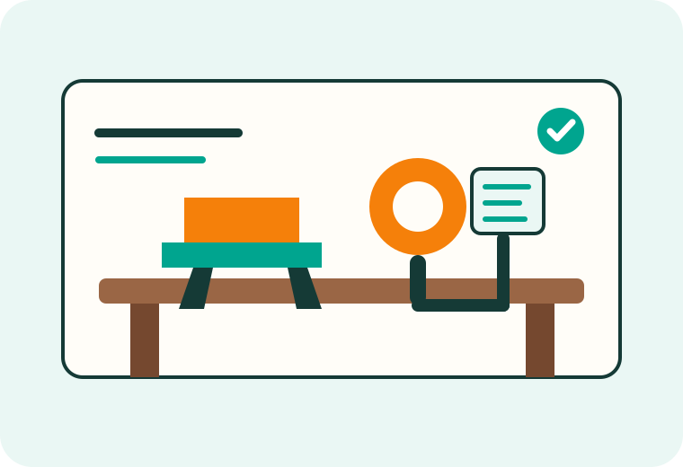

Find an idea
Browse practical equipment concepts organized by need, build type, cost, and development status.
Adaptive ideas made buildable
Built For Them turns practical adaptive-equipment ideas into clear, affordable projects that families, therapists, and local makers can build together.

Start here
Browse practical equipment concepts organized by need, build type, cost, and development status.
Use clear materials lists, dimensions, diagrams, and safety notes designed for ordinary home shops.
Share feedback from families, therapists, and builders so each project becomes safer and more useful.
Featured projects
Version 1 launches with three projects at different stages. Detailed plans will be added as prototypes are tested.
A modular holder designed to connect common assistive switches to camera-mount hardware and multiple surfaces.
View project →A compact plywood bench with adjustable height and tilt for supported play, therapy, and positioning.
View project →A simple low seat concept with configurable trunk and lateral supports for supervised floor activities.
View project →Built carefully
Every plan should be reviewed for the specific child, environment, and intended use. Adaptive equipment can create real risks when dimensions, strength, positioning, or supervision are wrong.
Consult the child’s qualified therapist or clinician. Inspect every build before use, supervise use, and stop immediately if the equipment is unstable, uncomfortable, or damaged.
Read the safety notice